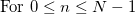

内容 |
解析： 信号処理： STFT
短時間フーリエ変換を実行します。
これはOriginProのみの機能です。
1. stft ix:=col(2);
2. stft ix:=col(2) interval:=4;
3. stft ix:=col(2) option:=complex;
4. stft ix:=col(2) winlen:=32 fftlen:=64 overlap:=16;
5. stft ix:=col(2) win:=tri;
6. stft ix:=col(2) win:=gauss alpha:=3;
7. stft ix:=col(2) win:=kaiser beta:=2;
8. stft ix:=col(2) plot:=0;
| 表示 名 |
変数 名 |
I/O と データ型 |
デフォルト 値 |
説明 |
|---|---|---|---|---|
| 入力 | ix |
入力 vector<complex> |
<active> |
入力信号を指定します。 |
| 指定する | mode |
入力 int |
0 |
オプションリスト:
|
| サンプリング間隔 | interval |
入力 double |
<自動> |
modeがinterval(間隔)の場合、サンプリング間隔を指定します。デフォルトは <自動>で、これは自動に計算される間隔に対応しています。 |
| サンプリング周波数 | freq |
入力 double |
<自動> |
modeがfrequency(周波数)の場合、サンプリング間隔を指定します。デフォルトは <自動>で、これは自動に計算される周波数に対応しています。 |
| FFT長 | fftlen |
入力 int |
256 |
FFT区間の大きさを指定します。 |
| ウィンドウ長 | winlen |
入力 int |
256 |
ウィンドウの大きさを指定します。これはFFT区間の大きさより大きくてはいけません。 |
| オーバーラップ | overlap |
入力 int |
128 |
ウィンドウ区間が重なるデータポイントの数を指定します。ウィンドウの大きさより小さくしてください。 |
| ウィンドウ法 | win |
入力 int |
4 |
FFTで使用するウィンドウ法を指定します。
オプションリスト:
|
| アルファ値 | alpha |
入力 double |
0 |
ウィンドウ法がGaussianの場合のみ利用できます。ガウスウィンドウに対して、アルファパラメータを指定します。 |
| ベータ値 | beta |
入力 double |
0 |
ウィンドウ法がKaiserの場合のみ利用できます。Kaiserウィンドウに対して、ベータパラメータを指定します。 |
| オプション | option |
入力 int |
2 |
計算オプションを指定します。デフォルト値は2で、これはdB単位での振幅の計算に対応しています。
オプションリスト:
|
| 時間と周波数の入れ替え | swapxy |
入力 int |
0 |
イメージプロットの時間軸と周波数軸を入れ替えるかどうかを指定します。 |
| 出力行列 | om |
出力 MatrixObject |
[<新規>]<新規>! |
出力する行列を指定します。 |
| プロット | plot |
入力 int |
1 |
結果のイメージプロットを生成するかどうかを指定します。 |
| 出力ワークシート | rd |
出力 ReportData |
[<入力>]<新規> |
出力ワークシートの指定をします。 |
1.デフォルトの設定で、列Bに対してSTFTを実行します。
stft ix:=col(b)
2.Hanning法でSTFTを実行するには
stft -d
ダイアログボックスを開きます。そしてウィンドウの種類で、Hanningウィンドウを選択します。
3.事前に保存したMyThemeという分析テーマを使ってSTFTを実行するには、コマンドウィンドウに次のように入力します。
stft -t "MyTheme"
STFTの計算
STFTは、次の手順で計算します。
1.Nポイントが入力信号から取られます。Nはウィンドウサイズです。
2.選択したウィンドウの種類を使って、抽出したデータをポイント毎に掛け算します。
3.ウィンドウサイズがFFT区間のサイズより小さい場合、ウィンドウの両側にゼロが付加されます。
4.FFTは、FFT区間で計算されます。
5.ユーザが指定した重なりサイズに従ってウィンドウを移動し、入力信号の終わりまでステップ1からステップ4を繰り返します。
ウィンドウ関数
ウィンドウの移動は次のように定義されます。
矩形ウィンドウ：
Welchウィンドウ：
Triangularウィンドウ：

Bartlettウィンドウ：
Hanningウィンドウ：
Hammingウィンドウ：
Blackmanウィンドウ：
Gaussianウィンドウ
Kaiserウィンドウ
where I(ix) denotes Bessel Function.
サンプリング間隔の計算
サンプリング間隔の自動計算の詳細は、fft1のXファンクションのヘルプをご覧ください。
詳細は、ユーザガイドをご覧下さい。